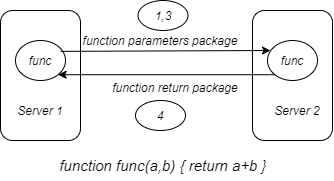
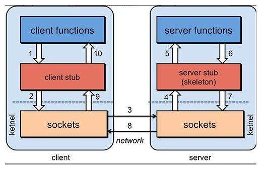

RPC（Remote Procedure Call），在Wiki上的解释是：
In distributed computing, a remote procedure call (RPC) is when a computer program causes a procedure (subroutine) to execute in a different address space (commonly on another computer on a shared network), which is coded as if it were a normal (local) procedure call, without the programmer explicitly coding the details for the remote interaction.
RPC可以用于不同服务进程之间的通信（无论是不是在同一台机器上）。使用RPC可以在不用特定编程的基础上，像调用本地模块一样调用远端模块，这可以广泛用于分布式系统不同服务之间的调用。
RPC基本原理

假设Server1上要调用Server2上的func函数，完成一个基本的a+b运算。Server1需要先将需要把参数1,3序列化，打包成数据包后通过网络发给Server2。Server2拿到数据包后反序列化参数到内存，调用func方法，再把返回结果序列化后返回给Server1。RPC框架参与了数据的序列化和反序列化，数据包的封装与派发，调用目标函数等过程。开发者调用Server1上的func函数时，感觉就好像在调用本地函数一样。
RPC架构

- 服务消费方（Client）调用以本地调用方式调用服务；
- Client Stub接收到调用后负责将方法、参数等组装成能够进行网络传输的消息体；
- Client Stub找到服务地址，并将消息发送到服务端；
- Server Stub收到消息后进行解码；
- Server Stub根据解码结果调用本地的服务；
- 本地服务执行并将结果返回给Server stub；
- Server Stub将返回结果打包成消息并发送至消费方；
- Client Stub接收到消息，并进行解码；
- 服务消费方得到最终结果。
不同RPC框架之间的关系
常用的RPC框架有grpc，DUBBO,Thrift。
- grpc是Google最近公布的开源软件，基于最新的HTTP2.0协议，并支持常见的众多编程语言。我们知道HTTP2.0是基于二进制的HTTP协议升级版本，目前各大浏览器都在快马加鞭的加以支持。这个RPC框架是基于HTTP协议实现的，底层使用到了Netty框架的支持。
- Thrift是Facebook的一个开源项目，主要是一个跨语言的服务开发框架。它有一个代码生成器来对它所定义的IDL定义文件自动生成服务代码框架。用户只要在其之前进行二次开发就行，对于底层的RPC通讯等都是透明的。不过这个对于用户来说的话需要学习特定领域语言这个特性，还是有一定成本的。
- Dubbo是阿里集团开源的一个极为出名的RPC框架，在很多互联网公司和企业应用中广泛使用。协议和序列化框架都可以插拔是及其鲜明的特色。同样 的远程接口是基于Java Interface，并且依托于spring框架方便开发。可以方便的打包成单一文件，独立进程运行，和现在的微服务概念一致。
dubbo中使用了netty作为网络传播的实现，netty中使用nio实现了传输过程的零拷贝，通过多路复用提升了网络I/O的性能。
序列化和反序列化方式有JSON，XML等文本序列化方式，也可以使用protobuff等二进制序列化。RPC框架的性能差异往往由于采用的序列化/反序列化工具的和网络I/O策略。
RPC和HTTP的关系
RPC是一种思想，而HTTP是一种实现RPC的特殊形式，两者本质上都是基于TCP的协议。HTTP可以看成序列化方式是JSON的RPC协议，HTTP用作RPC的时候，需要带有HTTP请求头，而用更一般的基于Thirft，protobuff序列化的RPC框架，可以自定义协议，从而传递的数据包更精简，反序列化性能也更高。
成熟的RPC框架还提供好了“服务自动注册与发现”、”智能负载均衡”、“可视化的服务治理和运维”、“运行期流量调度”等等功能，而HTTP的负载均衡往往需要Nginx的参与。
RPC/HTTP/MQ的使用场景
RPC，MQ，HTTP都可以用于模块间的相互调用。RPC和队列一般用于公司内部系统多个模块之间的通信，而HTTP一般用于开放服务，提供外部系统调用。
使用基于HTTP的RESTfull接口的时候，要写一大份接口文档，严格地标明输入输出是什么，说清楚每一个接口的请求方法，以及请求参数需要注意的事项等。但是对于大型企业来说，内部子系统较多、接口非常多的情况下，RPC框架一般都有注册中心，有丰富的监控管理，发布、下线接口、动态扩展等，对调用方来说是无感知、统一化的操作。
RPC服务主要是针对大型企业的，而HTTP服务主要是针对小企业的，因为RPC效率更高，而HTTP服务开发迭代会更快。
RPC适用于同步调用（必须在调用后立刻获取返回结果），而队列适用于异步调用。
参考资料